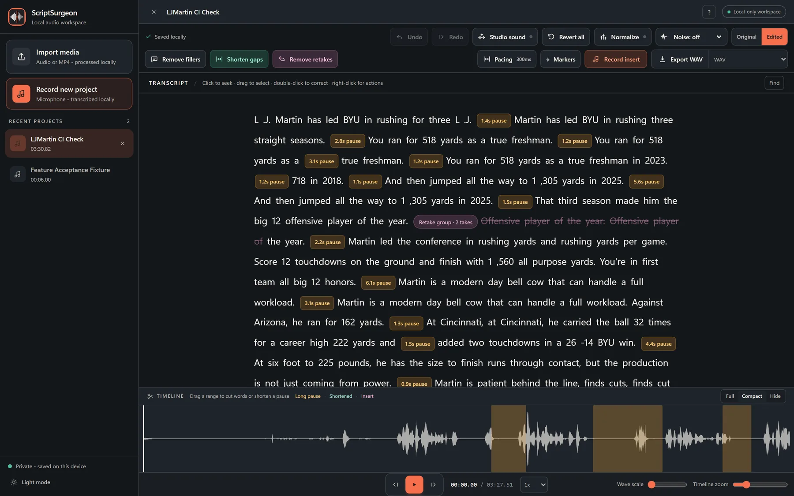
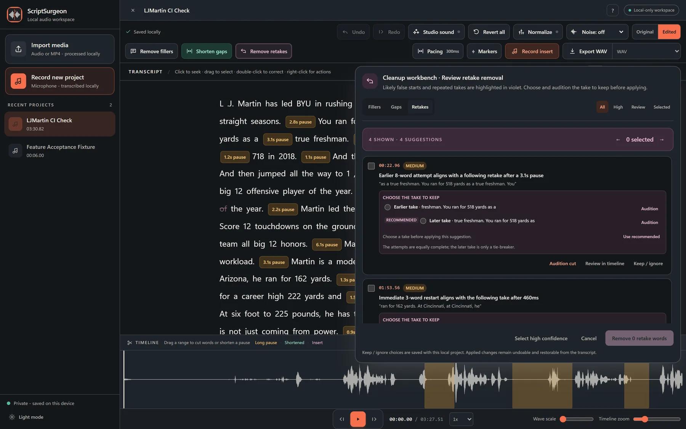
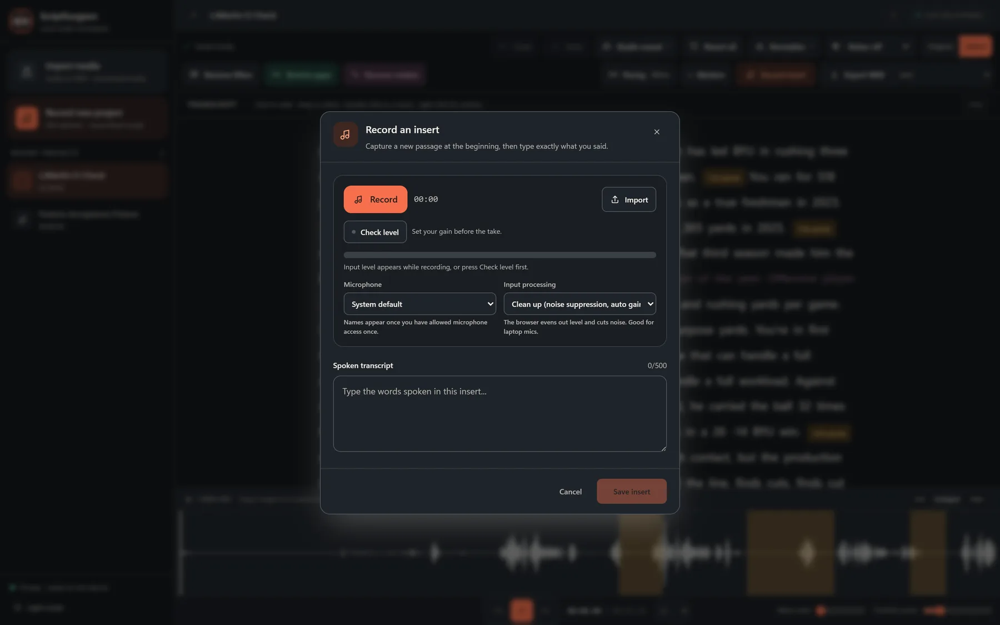
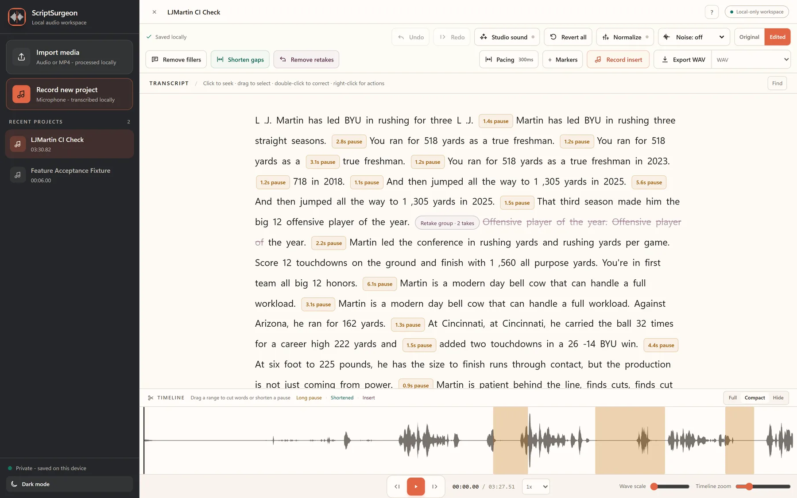

Now fully free Every feature, including delivery and timeline handoff, in every build.
Your audio.
Under the knife.
ScriptSurgeon turns speech into an editable transcript. Delete a word and the audio goes with it. Review cleanup, tune pacing, choose the better take, and export a delivery-ready edit. All on your device, free and open source.

- 1RecordCapture locally with your mic.
- 2TranscribeSpeech to text on your machine.
- 3CutEdit the transcript. Audio cuts instantly.
- 4RestoreBring words and takes back anytime.
- 5ExportWAV, MP3, captions, or an NLE timeline.
Free and open source
Everything.
Nothing held back.
There is no paid tier, no account, and no trial that expires. Every capability below ships in every build, on Windows and macOS, under the MIT licence. Packages are published on GitHub Releases only after their native build and smoke checks pass.
- Cleanup you can reviewPreview filler, pause, and retake suggestions. Hear the change, Keep any item, then apply only the edits you select.
- Filler safeguardsContext-sensitive words stay review-first. Suggestions never become automatic deletions.
- Pacing you setChoose Conversation, Podcast, Tight, or Custom—and tune detection and retained room tone, even per gap.
- Choose the better takeCompare candidate takes in context and select the take to keep. Change or restore that choice later.
- Chapters that deliverAdd markers and chapters, then export chapter WAV clips, a chapter list, TXT headings, or VTT chapter cues.
- Finish somewhere elseExport the cut as an EDL or Final Cut XML, described against your original recording rather than a render.
- A recorder you can set up firstPick your input, check the level before the take, choose raw capture or cleanup, pause and resume mid-take, and keep earlier takes to compare.
- Delivery, includedMP3, background noise cleanup, loudness normalize to the -16 LUFS spoken-word target, and chapter delivery. All of it, free.
- A calmer editorDark mode, a light-mode toggle, and Full, Compact, or Hide timeline views.
- Windows installerGet the validated desktop installer from the latest GitHub Release.
- macOS DMGsNative Apple Silicon (macOS 14+) and Intel (macOS 13+) packages are released after their macOS build and smoke checks pass.
Review-first cleanup
Clean the take.
Keep the intent.
Review independent filler, gap, and retake suggestions before any audio changes. Nothing is ever applied automatically: compare the takes, audition the cut, then apply only what you choose. When a suggestion is held back, the app tells you which safeguard held it.
- Audition original and edited context
- Keep or restore any proposal
- Conservative filler safeguards

- um00:24.02Restore
- you know00:24.11Restore
- like00:24.73Restore
Pacing and retakes
Set the rhythm.
Choose the take.
Choose a pacing preset or an exact room-tone target for a pause. Repeated lines stay review-first, so you choose the take that belongs.
- Conversation, Podcast, Tight, or Custom pacing
- Exact per-gap targets
- Speaker-aware retake candidates
Record and insert
Add new audio
right in place.
Start a project from your microphone, or record a missing line inside an existing edit and drop it exactly where it belongs.
- Choose your input and check the level first
- Raw capture, or the browser's noise cleanup
- Pause mid-take and keep takes to compare

- OpeningMarker
- Key pointChapter
- Wrap upChapter
Chapter WAV · list · TXT · VTT
Markers and chapters
Find the moment.
Deliver the story.
Save markers at the edit, turn them into chapters, and generate local chapter clips, lists, headings, and cues for handoff.
- Chapter range WAV exports
- Chapter lists and TXT headings
- Optional VTT chapter cues
Timeline handoff
Finish it
somewhere else.
Not every edit ends here. Export the cut as an EDL or Final Cut XML: a list of in and out points against your original recording rather than a render, so the handoff is instant and the source stays untouched.
- Final Cut XML keeps clip names, markers, and inserted takes
- Frame-based, so edit points land on your timeline's frames
- The exported WAV or MP3 stays the sample-accurate version

Your data stays local
No cloud.
No compromises.
Projects, transcripts, previews, and exports stay on your device in normal use. No account or audio upload is required.
Desktop downloads
Start with the
latest release.
Download the Windows installer or native macOS DMG from GitHub Releases after its package checks finish.
Windows installer
Available from the latest GitHub Release.
macOS DMGs
Native Apple Silicon (macOS 14+) and Intel (macOS 13+) builds are attached to GitHub Releases
only after their native build and smoke checks pass.
The initial DMGs are ad-hoc signed but not notarized.
Verify their checksum and use macOS approval only if you trust them.
Source builds
Windows source-build instructions remain in the README.Love ScriptSurgeon?
It is free and it stays free. Starring the repository is what helps other people find it — a coffee keeps the independent tools moving.